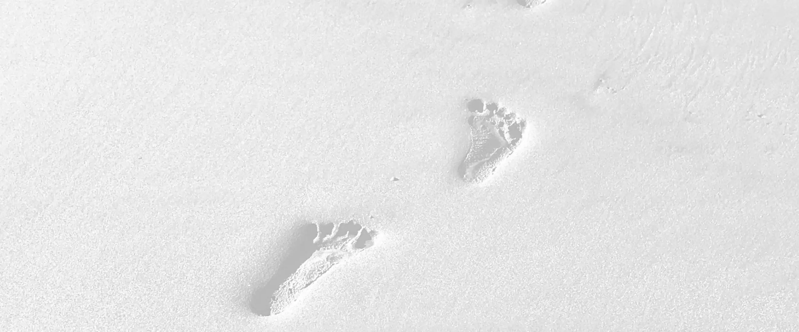

<!-- Pegar y escribir el alt de cada foto. La de la portada: quitar loading="lazy" y poner fetchpriority="high". -->
<picture>
  <source type="image/avif" srcset="lorratzak-1280.avif 1280w, lorratzak-1920.avif 1920w, lorratzak-2643.avif 2643w" sizes="100vw">
  
</picture>
